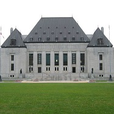

Competências originárias e recursais do STF

As competências originárias e recursais do STF, dispostas no art. 102 de nossa Constituição, foram objeto de nossa breve análise na Aula 1 de nosso curso.
O fechamento da aula ocorreu em 17/12/2016, quando a última alteração aprovada consistiu na Emenda Constitucional nº 95, promulgada em 15/12/2016.
Tradução livre de: “The Congress, whenever two thirds of both Houses shall deem it necessary, shall propose Amendments to this Constitution, or, on the Application of the Legislatures of two thirds of the several States, shall call a Convention for proposing Amendments, which, in either Case, shall be valid to all Intents and Purposes, as Part of this Constitution, when ratified by the Legislatures of three fourths of the several States, or by Conventions in three fourths thereof, as the one or the other Mode of Ratification may be proposed by the Congress; Provided that no Amendment which may be made prior to the Year One thousand eight hundred and eight shall in any Manner affect the first and fourth Clauses in the Ninth Section of the first Article; and that no State, without its Consent, shall be deprived of its equal Suffrage in the Senate”.
Tradução livre de: “For, instead of narrowing the Court’s jurisdiction, Congress chose, in more and more instances, to delegate to the Court the responsibility for determining which federal issues are of suficiente national importance to warrant Supreme Court review. The process of issue selection, therefore, has become an increasingly crucial part of the review function”.
COLEMAN JR., William T. The Supreme Court of the United States: Managing Its Caseload to Achieve Its onstitutional Purposes. In: Fordham Law Review, vol. 52, issue 1, October of 1983, p. 7, disponível em http://ir.lawnet.fordham.edu/cgi/viewcontent.cgi?article=2556&context=flr, acesso em 17/12/2016. Tradução livre de: “For, instead of narrowing the Court’s jurisdiction, Congress chose, in more and more instances, to delegate to the Court the responsibility for determining which federal issues are of suficiente national importance to warrant Supreme Court review. The process of issue selection, therefore, has become an increasingly crucial part of the review function”.
Tradução livre de: “The following, although neither controlling nor fully measuring the Court’s discretion, indicate the character of the reasons the Court considers: (a) a United States court of appeals has entered a decision in conflict with the decision of another United States court of appeals on the same important matter; has decided an important federal question in a way that conflicts with a decision by a state court of last resort; or has so far departed from the accepted and usual course of judicial proceedings, or sanctioned such a departure by a lower court, as to call for an exercise of this Court’s supervisory power; (b) a state court of last resort has decided an important federal question in a way that conflicts with the decision of another state court of last resort or of a United States court of appeals; (c) a state court or a United States court of appeals has decided an important question of federal law that has not been, but should be, settled by this Court, or has decided an important federal question in a way that conflicts with relevant decisions of this Court”.
Tradução livre de: “Art. 280. LLamamiento de autos. Rechazo del recurso extraordinario. Memoriales en el recurso ordinario. Cuando la Corte Suprema conociere por recurso extraordinario, la recepción de la causa implicará el llamamiento de autos. La Corte, según su sana discreción, y con la sola invocación de esta norma, podrá rechazar el recurso extraordinario, por falta de agravio federal suficiente o cuando las cuestiones planteadas resultaren insustanciales o carentes de trascendencia”.’
Tradução livre de “A petition for a writ of certiorari is rarely granted when the asserted error consists of erroneous factual findings or the misapplication of a properly stated rule of law”.
Tradução livre de: “Leave to appeal is granted to petitions that, in the opinion of the Appeal Committee, raise an arguable point of law of general public importance which ought to be considered by the House at this time, bearing in mind that the matter will already have been the subject of judicial decision and may have already been reviewed on appeal. A petition which in the opinion of the Appeal Committee does not raise such a point of law is refused on that ground. The Appeal Committee gives brief reasons for refusing leave to appeal29 but does not otherwise explain its decisions”. O documento está disponível na íntegra em: < http://www.publications.parliament.uk/pa/ld199697/ldinfo/ld08judg/bluebook/bluebk-1.htm>
Tradução livre de: “Most appeals are heard by the Court only if leave is first given. Leave to appeal is granted by the Court if, for example, the case involves a question of public importance or if it raises an important issue of law (or an issue of both law and fact) that warrants consideration by the Court. The Court’s decision whether to grant leave to appeal is based on its assessment of the public importance of the legal issues raised in the case in question. The Court thus has control over its docket and is able to supervise the growth and development of Canadian jurisprudence”.
Tradução livre de: “In considering whether to grant an application for special leave to appeal to the High Court under this Act or under any other Act, the High Court may have regard to any matters that it considers relevant but shall have regard to: (a) whether the proceedings in which the judgment to which the application relates was pronounced involve a question of law: (i) that is of public importance, whether because of its general application or otherwise; or (ii) in respect of which a decision of the High Court, as the final appellate court, is required to resolve differences of opinion between different courts, or within the one court, as to the state of the law; and (b) whether the interests of the administration of justice, either generally or in the particular case, require consideration by the High Court of the judgment to which the application relates”.
A versão já traduzida foi retirada de: MSPC - Informações Técnicas. Acesso em: 14 dez 2016.
Créditos do curso
Material didático do curso a distância:
Repercusão Geral: origens, inovações e sua aplicação ao Supremo Tribunal Federal
Validação pedagógica e diagramação:
Supremo Tribunal Federal
Secretaria de Gestão de Pessoas
Coordenadoria de Desenvolvimento de Pessoas
Seção de Educação a Distância
Conteudista:
Abhner Youssif Mota Arabi (servidor do STF)
Revisora de textos:
Tatiana Viana Fraga (servidora do STF)
Designer Web:
Higor Bezerra Rodrigues (servidor do STF)
2017, Supremo Tribunal Federal
Todos os direitos reservados
Este material possui funções didáticas, sem fins comerciais
Para mais detalhes sobre as condições de uso, acesse: Licença STF
Dados para referência
SUPREMO TRIBUNAL FEDERAL. Curso a distância: Repercusão Geral: origens, inovações e sua aplicação ao Supremo Tribunal Federal. Brasília: Seção de Educação a Distância, 2017.
Disponível em https://ead.stf.jus.br/. Acesso restrito com login e senha.
Ambiente virtual de aprendizagem: https://ead.stf.jus.br
e-mail: seead@stf.jus.br

AULA 4 – Aspectos de direito comparado e a arguição de relevância
1. Introdução
Olá!
Na aula passada, avançamos no estudo de aspectos históricos relevantes ao nosso curso. Inicialmente, procuramos evidenciar alguns mecanismos sucessivamente adotados no direito brasileiro na tentativa de concretizar uma maior compatibilização vertical das decisões judiciais, conciliando a prestação da tutela jurisdicional com instrumentos que imprimam ao processo maior celeridade e uniformidade.
Na sequência, considerando a sua íntima relação com a repercussão geral, analisamos alguns aspectos da origem do recurso extraordinário e da crise que lhe acomete desde então. Constatando o que chamamos de crise do recurso extraordinário, isto é, o excesso de recursos submetidos à análise do Supremo Tribunal Federal, elencamos algumas iniciativas adotadas ao longo do tempo na tentativa de solucionar esse problema.
Nesse contexto, na aula de hoje nosso objetivo inicial é aprofundar o estudo de alguns aspectos de direito comparado, notadamente os institutos de outros países que se assemelham à nossa repercussão geral. Com maior destaque, estudaremos algumas questões relativas ao instrumento do writ of certioriari (adotado nos Estados Unidos), mas apontaremos também alguns mecanismos de outros países. Na sequência, o objetivo é analisar com maior especificidade a arguição de relevância, adotada no Brasil, quando cabia ao STF também a função de zelar pela aplicação do direito federal infraconstitucional, à qual também já nos referimos na aula passada.
2. Aspectos de direito comparado
2.1 O caso norte-americano e o desenvolvimento do writ of certiorari
No estudo de direito comparado atinente à repercussão geral, é importante analisar brevemente alguns mecanismos existentes em outros países que sejam análogos ao mencionado instituto brasileiro. Nesse intuito, destaca-se com maior força, merecendo nossa maior atenção, o caso dos Estados Unidos, ao qual já nos referimos, até aqui, de forma pontual em vários momentos do nosso curso. Essa maior ênfase se deve ao fato de ter sido lá o lugar em que se originou a ideia de criação de filtros ao acesso de processos à Suprema Corte, modelo que serviu de inspiração para muitos outros países, especialmente no que se refere à instituição do writ of certiorari.
Assim como acontece no caso brasileiro, as competências da Suprema Corte dos Estados Unidos também são dispostas na Constituição daquele país, as quais são estruturadas entre as atribuições originárias e as recursaisadd_to_photos. Os casos de sua competência estão previstos na seção 2 do artigo III da Constituição norte-americana de 1787, que assim dispõe:
1. A competência do Poder Judiciário se estenderá a todos os casos de aplicação da Lei e da Equidade ocorridos sob a presente Constituição, as leis dos Estados Unidos, e os tratados concluídos ou que se concluírem sob sua autoridade; a todos os casos que afetem os embaixadores, outros ministros e cônsules; a todas as questões do almirantado e de jurisdição marítima; às controvérsias em que os Estados Unidos sejam parte; às controvérsias entre dois ou mais Estados, entre um Estado e cidadãos de outro Estado, entre cidadãos de diferentes Estados, entre cidadãos do mesmo Estado reivindicando terras em virtude de concessões feitas por outros Estados, enfim, entre um Estado, ou os seus cidadãos, e potências, cidadãos, ou súditos estrangeiros.
2. Em todas as questões relativas a embaixadores, outros ministros e cônsules, e naquelas em que se achar envolvido um Estado, a Suprema Corte exercerá jurisdição originária. Nos demais casos supracitados, a Suprema Corte terá jurisdição em grau de recurso, pronunciando-se tanto sobre os fatos como sobre o direito, observando as exceções e normas que o Congresso estabelecer.
3. O julgamento de todos os crimes, exceto em casos de impeachment, será feito por júri, tendo lugar o julgamento no mesmo Estado em que houverem ocorrido os crimes; e, se não houverem ocorrido em nenhum dos Estados, o julgamento terá lugar na localidade que o Congresso designar por leiadd_to_photos.
Entretanto, diferentemente do modelo brasileiro, a especificação dos casos de sua competência recursal não é já definida pelo texto constitucional, mas são detalhados em maior extensão pela legislação infraconstitucional ordinária, facilitando a atividade legislativa de modificação da disciplina legal de tais recursos. Isso porque, em regra, o processo de alteração do texto constitucional se mostra mais rígido e mais dificultoso que a modificação de normas infraconstitucionais.
SAIBA MAIS - AS FORMAS DE ALTERAÇÃO DAS CONSTITUIÇÕES

A possibilidade de alteração de uma constituição costuma depender da previsão de seu próprio teor. É que, além do poder constituinte originário, pelo qual se cria uma nova ordem constitucional de forma inicial, ilimitada, incondicionada, existe também o poder constituinte derivado. De forma simples, este é previsto pelo poder constituinte originário para revisar ou reformar o texto constitucional, porém de forma ulterior, limitada e condicionada.
Com efeito, apesar da importância de certa estabilidade ou mesmo de núcleo imodificável do ato normativo de maior relevância de um ordenamento jurídico, é necessário que se assegure a possibilidade de sua alteração e atualização. Isso porque “não pode a sociedade, que muda a cada dia, ficar totalmente presa à visão daqueles que originariamente editaram o texto constitucional, os quais o fizeram sem poder prever situações e circunstâncias que futuramente se enfrentaria”. Dessa forma, “por mais importante que seja, nenhuma instituição pode ser considerada imutável; nem qualquer direito, por mais fundamental que seja, pode ser tido como eternamente inalterável” (ARABI, 2015, p. 46-47). Evita-se, assim, que a sociedade tropece em seus próprios pés (HOLMES. In: ELSTER; SLAGSTAD, 2003, p. 195-240).
A forma pela qual uma determinada constituição pode ser alterada define sua classificação como rígida, semirrígida ou flexível. Rígidas são aquelas que preveem um procedimento diferenciado e mais dificultoso para a sua modificação, quando em comparação ao rito legislativo utilizado para a edição ou alteração de leis infraconstitucionais. Flexíveis são as constituições que permitem a modificação de seu teor mediante o processo legislativo comum, sem a previsão de quóruns especiais de aprovação, por exemplo. Semirrígidas, intermediariamente, são aquelas que possuem partes rígidas – e, portanto, alteráveis somente mediante procedimento especial – e partes flexíveis – que podem ser alteradas pelo procedimento legislativo ordinário.
Ao prever, em seu art. 60, um procedimento diferenciado e mais rigoroso para que seja emendada, classifica-se a Constituição brasileira de 1988 como rígida. Nesse sentido, requerem-se a discussão e a votação “em cada Casa do Congresso Nacional, em dois turnos, considerando-se aprovada se obtiver, em ambos, três quintos dos votos dos respectivos membros” (art. 60, § 2º, da CRFB/1988).
Do ponto de vista material, veda-se até mesmo a deliberação sobre proposta de emenda tendente a abolir: a forma federativa de Estado; o voto direto, secreto, universal e periódico; a separação dos Poderes; e os direitos e garantias individuais. São essas as cláusulas pétreas explícitas, as quais nem mesmo por esse procedimento diferenciado podem ser suprimidas. De modo temporal ou circunstancial, impõem-se ainda outros limites, como a impossibilidade de emenda à Constituição “na vigência de intervenção federal, de estado de defesa ou de estado de sítio” (art. 60, § 1º, da CRFB/1988); restrições à possibilidade de iniciativa de proposta de emenda à Constituição (art. 60, caput, da CRFB/1988); e a impossibilidade de que uma matéria constante de proposta de emenda rejeitada ou havida por prejudicada seja objeto de nova proposta na mesma sessão legislativa (art. 60, § 5º, da CRFB/1988). Mesmo diante de todos esses requisitos, a Constituição brasileira já foi modificada 95 vezes add_to_photos.
De forma semelhante, a Constituição norte-americana mostra-se ser também rígida. O processo de emendas àquele texto constitucional é disciplinado por seu artigo V, o qual dispõe que:
O Congresso, todas as vezes que dois terços de ambas as Câmaras o julgarem necessário, poderá propor emendas a esta Constituição, ou, a pedido das legislaturas de dois terços dos diversos Estados, convocará uma convenção para a proposta de emendas que, em ambos os casos, serão válidas para todos os fins e propósitos, como parte desta Constituição, quando ratificadas pelas legislaturas de três quartos dos diversos Estados, ou por três quartos das convenções para tanto reunidas, conforme um ou outro modo de ratificação tenha sido proposto pelo Congresso; ressalvado que nenhuma emenda poderá ser feita antes do ano de mil oitocentos e oito sobre a primeira e sobre a quarta cláusulas da nona secção do primeiro artigo, e que nenhum Estado poderá ser privado, sem o seu consentimento, da igualdade de sufrágio no Senado. add_to_photos
De todo modo, por mais de cem anos desde a instituição do Judiciary Act de 1789, ao qual já fizemos referência na aula passada, não se possibilitava à Suprema Corte o poder de selecionar os casos que iria ou não julgar. Tinha-se, a partir da previsão constitucional, o detalhamento legal dos casos de sua competência e da forma de seu exercício, a cujo cumprimento estava o Tribunal vinculado, devendo apreciar os processos que atendiam aos requisitos ali estipulados. Entretanto, o modelo inicial instaurado em 1789 sofreu mudanças sucessivas ao longo do tempo, as quais gradualmente foram atribuindo maior discricionariedade à Suprema Corte, no sentido de apenas exercer suas atribuições recursais nos casos em que ela própria reputasse relevantes.
Nesse contexto, Edward Hartnett (2000), professor norte-americano da Seton Hall University School of Law e especialista na história e prática da Suprema Corte dos Estados Unidos, faz referência a relatório – elaborado pela Câmara dos Representantes daquele país – que revelava, em meados do Século XIX, o crescimento acentuado dos trabalhos do mencionado Tribunal após a Guerra de Secessão, travada entre 1861 e 1865. Nesse estudo, foram apresentados os seguintes números de casos submetidos à apreciação da Suprema Corte: (i) em 1860: 210 casos em acervo e 91 julgados; (ii) em 1870: 636 casos em acervo e 280 julgados; (iii) em 1880: 1.202 casos em acervo e 365 julgados; (iv) em 1886: 1.396 casos em acervo e 451 julgados. Essa constatação teria levado às primeiras reformas de relevância na estruturação do modelo norte-americano em 1891, dentre as quais se destacavam: “(i) a criação das cortes federais de apelação (circuit courts of appeal); (ii) a irrecorribilidade de diversas decisões proferidas por essas cortes federais de apelação, salvo quando houvesse, alternativamente, a certificação pela corte inferior de uma questão de direito a concessão pela Suprema Corte de writ of certiorari”, que, em tal época, “era mecanismo de inclusão de causas na competência recursal da Suprema Corte americana, e não de rejeição” (WAMBIER; DANTAS, 2016, p. 462).
No início do Século XX, porém, intensificaram-se as iniciativas no sentido da limitação da jurisdição recursal obrigatória da Suprema Corte, a qual deveria se restringir a questões que envolvessem diretamente a interpretação constitucional. Considerando a pequena extensão da Constituição norte-americana, tal limitação já reduziria bastante os trabalhos do Tribunal.

Um grande defensor dessas ideias foi William Howard Taft, Presidente dos Estados Unidos entre 1909 e 1913, bem como Presidente da Suprema Corte (Chief Justice) entre 1921 e 1930. William Howard patrocinou a ideia de que se concedessem poderes mais amplos para que a Suprema Corte decidisse o que deveria ou não ser por ela examinado, mediante o instrumento do writ of certiorari, que revelava uma escolha discricionária da Corte com base no que entendesse ser ou não relevante naquele dado momento.
Foi nesse contexto em que exsurgiu em 1925 o Judges’ Bill (“Lei dos Juízes”, em tradução livre), o qual já mencionamos em nossa última aula, pelo qual foram bastante reduzidos os casos em que se mostrava obrigatória a jurisdição da Corte, de modo que a maior parte dos casos tinha suas decisões finais proferidas pelos tribunais de apelação (“Circuit Courts of Appeals”). A partir de então, como elucidam Teresa Wambier e Bruno Dantas, “a jurisdição recursal da Suprema Corte restara preservada tão somente em quatro casos, e apenas nos dois primeiros era obrigatória: (i) writ of error; (ii) writ of appeal; (iii) writ of certiorari; e (iv) certification of questions”; havendo uma “drástica redução do cabimento do writ of error e do writ of appeal, de modo que, em todas as outras hipóteses, a jurisdição recursal da Corte se daria por certiorari ou “certification of questions” (WAMBIER; DANTAS, 2016, p. 464).
Essas limitações, muitas vezes, eram ainda expandidas jurisprudencialmente. Houve casos, por exemplo, em que alguns Justices da Suprema Corte sustentavam a competência do Tribunal para restringir o exame dos recursos cabíveis que lhes eram endereçados, ignorando aspectos infraconstitucionais atinentes ao deslinde da causa, por exemplo. Nesse sentido, enunciava-se o entendimento de que “se a mesma petição de certioriari contivesse duas questões constitucionais, e a Suprema Corte se interessasse por apenas uma delas, estaria autorizada a restringir sua jurisdição exclusivamente àquela” (Ibidem, p. 464). Isto é, o poder discricionário de seleção não se mostra presente somente em relação aos casos que serão efetivamente analisados pela Corte, mas também no que se refere a quais questões, dentro de um caso selecionado, merecem ou não ser apreciadas.
Entretanto, apesar de ter representado uma restrição bastante significativa dos casos de competência recursal obrigatória da Suprema Corte, tal iniciativa legislativa de 1925 não a eliminou por inteiro, já que persistia a obrigatoriedade nos casos delimitados de writ of error e writ of appeal. Apenas em 1988 é que esse processo foi concretizado por meio do Supreme Court Case Selection Act, ao qual já fizemos referência na última aula, quando, a partir de então, foram reduzidas as possibilidades de recursos àquele Tribunal, subsistindo, em muitos casos, uma única forma de acesso à Suprema Corte: o writ of certiorari.
Em verdade, trata-se de uma opção política construída gradualmente no sistema norte-americano, em que, a partir da constatação do assoberbamento de recursos submetidos à análise de sua Suprema Corte – apesar de em números muito menores aos que temos no Brasil –, decidiu-se por atribuir ao próprio Tribunal cada vez mais autonomia e discricionariedade para a seleção dos casos a serem julgados. Como bem sintetiza William T. Coleman Jr., “em lugar de estreitar a jurisdição da Corte, o Congresso escolheu, em mais e mais situações, delegar à Corte a responsabilidade de determinar quais questões federais são dotadas de relevância nacional suficiente para ensejar a sua revisão pela Suprema Corte”, de modo que “o processo de seleção de casos se tornou uma parte cada vez mais crucial da tarefa de revisão” (1983, p. 7) add_to_photos.
Assim, de modo simplificado, o writ of certiorari revela-se como uma ordem concedida após uma petição dirigida à Suprema Corte dos Estados Unidos, pela qual se requer a revisão de determinado caso. A expressão deriva do latim certiorare, que significa “mostrar, provar”. Ou seja, concedido o certiorari, alguma Corte inferior deverá enviar o caso selecionado para a análise daquele Tribunal.
SAIBA MAIS
Normativamente, o writ of certiorari recebe tratamento mais específico pelas Rules of Supreme Court of the United States (“Regras da Suprema Corte dos Estados Unidos”, em tradução livre, cujo inteiro teor pode ser acessado aqui). Deixaremos de abordar, aqui, os seus detalhes procedimentais,ç por não constituir o objeto específico de nosso curso, mas aos que se interessarem indica-se a leitura da obra Recurso especial, recurso extraordinário e a nova função dos tribunais superiores no direito brasileiro (WAMBIER; DANTAS, 2016, p. 465-470).
Dentro dessas regras, a Parte III (“Jurisdiction on Writ of Certiorari”) é inteiramente dedicada ao assunto, subdividida nos Provimentos 10 a 16. Já de início, se deixa claro que a “revisão em um writ of certiorari não é uma questão de direito, mas de discricionariedade judicial” e que “uma petição para um writ of certiorari apenas será aceita por razões relevantes add_to_photos”. Ou seja, as partes não possuem qualquer direito subjetivo a que sua causa seja analisada pela Suprema Corte. Apenas nos casos em que ficar convencida de sua relevância, é que a Corte concederá o writ of certiorari, pelo qual conhecerá e analisará a questão, podendo revê-la.
Na sequência, a norma estabelece alguns critérios indicativos a serem levados em consideração no momento do exame das petições de certiorari, a saber se possuem ou não a relevância necessária. Assim, afirma-se que serão considerados pela corte os casos em que:
(a) uma corte federal de apelação adotou uma decisão em conflito com a decisão de outra corte federal de apelação na mesma matéria; ou decidiu uma questão federal de forma conflitante com a decisão de uma corte estadual de última instância; ou se distanciou tanto do procedimento judicial usual e aceitável ou ratificou tal distanciamento perpetrado por uma corte inferior, que se exige o exercício do poder de supervisão desta Corte; (b) uma corte estadual de última instância tenha decidido uma questão federal importante numa forma que conflite com uma decisão de outra corte estadual de última instância ou de uma corte federal de recursos; (c) uma corte estadual ou uma corte federal de recursos tenha decidido uma questão importante de direito federal que não foi, mas deveria ter sido, examinada por esta Corte, ou decidiu uma questão federal importante numa forma que conflite com deicsões relevantes desta Corte add_to_photos.
Ainda se destaca expressamente que “uma petição de writ of certiorari é raramente concedida quando o erro alegado consiste na apreciação equivocada de fatos ou na má aplicação de uma regra jurídica invocada corretamente add_to_photos”. Paralelamente, o dispositivo faz lembrar a Súmula nº 279 do STF, segundo a qual “Para simples reexame de prova não cabe recurso extraordinário”, que costuma ser alegada para fundamentar a impossibilidade de revisão do contexto fático-probatório de uma causa, quando da apreciação do recurso indicado. Ademais, as hipóteses indicadas pelo Provimento das Regras da Suprema Corte dos Estados Unidos também fazem lembrar as situações de violação manifesta à norma jurídica e de erro de fato, ocorrências que, no direito brasileiro, configuram hipóteses de rescindibilidade para o ajuizamento de ação rescisória (conforme os incisos V e VIII do art. 966 do CPC/2015).
De todo modo, percebe-se que os critérios exemplificados pela norma – que não são previstos de maneira taxativa – são bastante fluidos e não fornecem elementos muito objetivos e previsíveis. Apesar de todos eles dizerem respeito, em alguma medida, a situações de divergência jurisprudencial, o fato é que se trata realmente de uma análise discricionária a ser realizada pela Corte. De tal modo, apesar do jogo de palavras, nota-se que se gasta muito mais esforço em decidir o que será decidido do que efetivamente decidindo. Retomando a citação de William T. Coleman Jr. que acima se fez, a seleção de quais casos serão ou não revistos passa a ser aspecto cada vez mais importante da própria tarefa de revisão. De igual modo, uma questão não aceita hoje poderá ser considerada relevante daqui a algum tempo, de forma a ensejar a concessão do writ of certiorari.
Assim:
A Suprema Corte dos EUA exerce juízo altamente subjetivo no sentido de avaliar o melhor momento de se pronunciar sobre uma determinada questão jurídica. Isso se deve, em grande medida, ao regime do stare decisis vigente naquele país, pois, diferentemente dos países de tradição romano-germânica, as decisões dos tribunais irradiam eficácia vinculante aos juízes e tribunais inferiores, e uma decisão precipitada da Suprema Corte poderia até mesmo inibir o florescimento de uma corrente jurisprudencial mais justa e consentânea com o sistema constitucional. (WAMBIER; DANTAS, 2016, p. 472/473.)
Entretanto, apesar de se tratar de aspectos típicos dos sistemas de common law, sobre o qual já discorremos em nosso curso, relembra-se o que dispusemos a respeito dos arts. 926 e seguintes do Novo Código de Processo Civil brasileiro, que procura implementar maior vinculatividade obrigatória entre as diversas instâncias judiciais, com diversos mecanismos de compatibilização vertical das decisões.
Por fim, quando se acolher o pedido, conceder-se-á o writ of certiorari, instrumento pelo qual a Suprema Corte requer do tribunal recorrido o envio do processo, para que se proceda o seu julgamento. As regras detalhadas para as providências nos casos de acolhimento ou rejeição da petição estão dispostas no provimento 16 das Regras da Suprema Corte dos Estados Unidos.
Segundo informações constantes do próprio sítio eletrônico da Suprema Corte dos Estados Unidos, o Tribunal recebe, anualmente, entre 7 mil e 8 mil petições para um writ of certiorari, dos quais apenas cerca de 80 casos são selecionados (informações disponíveis aqui.
Dessa forma, nota-se que a evolução do instituto do writ of certiorari culminou em uma atual forma de seleção, promovida pela Suprema Corte, dos casos a serem efetivamente submetidos a julgamento. O principal intuito de seu desenvolvimento foi reduzir a carga de trabalho da Corte máxima daquele país, atribuindo-lhe sucessivos poderes discricionários.
Entretanto, como já anunciamos, não é só nos Estados Unidos que se desenvolveram institutos com tais características. No estudo de direito comparado, há outros países que apresentam também mecanismos interessantes. Assim, apesar de fazê-lo com maior brevidade, no próximo tópico serão apresentados alguns traços dos sistemas existentes em outros países. Longe de querer esgotar o assunto, a ideia é apenas dar breve notícia sobre alguns aspectos relevantes desses outros países selecionados.
2.2 Os casos de outros países
2.2.1 Alemanha
Na Alemanha, o instituto da revisão (Revision) compreende recurso dirigido à Corte Federal de Justiça (Bundesgerichtshof – BGH). É cabível diante de decisões exaradas pelas cortes regionais de recursos (Oberlandesgericht – OLG) ou, em esparsas situações, pelas cortes regionais de primeira instância (Landgericht – LG). Pautava-se a revisão eminentemente pelos interesses das partes, já que possibilitava a correção, por uma Corte Superior, de eventuais erros cometidos na aplicação ou interpretação do direito.
Corte Federal de Justiça da Alemanha
Em tal âmbito, existiam naquele país duas formas principais de filtros quanto à admissibilidade ou não da revisão. Inicialmente, tinha-se um filtro para causas patrimoniais, pelo qual se exigia que o valor da causa ultrapassasse certo piso monetário. De outro lado, quando as cortes regionais de recursos (OLG) concediam uma espécie de aprovação ou licença ao recurso de revisão (Zulassungsrevision), possível em duas situações: quando a corte regional, de forma discricionária e conforme sua avaliação, entendesse se tratar de um “caso de fundamental importância” (Rechtssache grundsätzliche Bedeutung) ou quando seu julgamento se colocasse em sentido contrário ao entendimento jurisprudencial da Corte Federal (BGH), caso em que não se falava em discricionariedade, mas em dever de emissão dessa aprovação.
Jurisprudencialmente, permitia-se à BGH a possibilidade de rejeitar o recurso se não se vislumbrasse significação fundamental no caso sob análise, mesmo se tivesse sido inicialmente admitido por uma das OLGs. De igual modo, quando na origem se negava a licença ao recurso, previa-se a existência de um recurso direcionado à BGH, que poderia reapreciar a questão (de forma similar ao agravo previsto pelo art. 544 do CPC/1973 e, agora, expresso no art. 1.042 do CPC/2015, conforme as alterações implementadas pela Lei nº 13.256/2016).
Entretanto, em 2002 o sistema alemão foi alterado quanto aos critérios de admissibilidade da revisão. Extinguiu-se a possibilidade de recurso em razão apenas do valor da causa, passando-se a exigir que sempre haja a prévia licença ou autorização ao recurso de revisão. Essa licença, após a reforma, pode ser concedida tanto pelas cortes regionais como pela Corte Federal, nos casos em que:
A questão jurídica discutida for dotada de significação fundamental (grundsätzliche Bedeutung) ou quando o aperfeiçoamento do direito ou a uniformização da jurisprudência (die Fortbildung des Rechts oder die Sicherung einer einheitlichen Rechtsprechung) requerer o pronunciamento da BGH. (WAMBIER; DANTAS, 2016, p. 478.)
A nova sistemática não ficou indene a críticas, tendo inclusive sua constitucionalidade sido questionada perante a Corte Constitucional Federal alemã (Bundesverfassungsgericht – BverfG). No julgamento, assentou-se a constitucionalidade das previsões incluídas no Código de Processo Civil alemão (Zivilprozessordnung – ZPO), mas afirmou-se que, para além do critério da significação fundamental, a revisão será admissível também quando se vislumbrar a necessidade de uniformização da jurisprudência sobre determinado aspecto.
2.2.2 Argentina
Na Argentina, país de tradição mais próxima à brasileira, tem-se também um modelo judicial com uma Corte Suprema e de recurso extraordinário baseado no Judiciary Act dos Estados Unidos. Peculiarmente, houve também influências do modelo da cassação civil espanhola (Ley de Enjuiciamiento Civil, de 1855).
Mais especificamente em relação ao estabelecimento de filtros ao cabimento de recursos dirigidos à Corte Suprema, sobreveio em 1990 a Lei nº 23.774, que deu nova redação ao art. 280 do Código Procesal Civil y Comercial de la Nación, que trata do procedimento ante a Corte Suprema argentina. O dispositivo mencionado prevê:
Quando a Corte Suprema conhecer mediante recurso extraordinário a recepção de uma causa, implicará a avocação dos autos. A Corte, segundo sua discricionariedade sã, e com a só invocação desta norma, poderá rechaçar o recurso extraordinário, por falta de lesão federal suficiente ou quando as questões discutidas carecerem de substancialidade ou de transcendência add_to_photos.
Palácio de Justiça argentino
Também se prevê o recurso de queja por denegación de recursos ante la Corte Suprema (“queixa por denegação de recursos para a Corte Suprema). Apenas se destaca que à Corte Suprema argentina, tal como ocorria com o STF até 1988, ainda se atribui a tarefa de guarda da Constituição ao lado da de também zelar pela aplicação da legislação federal infraconstitucional.
2.2.3 Inglaterra
1.Bandeira da Inglaterra
2.Bandeira do Reino Unido
Na Inglaterra e nos demais países integrantes do Reino Unido, não se tinha, até 2009, uma Suprema Corte, em razão da forte supremacia parlamentar que ali se tem. Até então, as funções judiciais de Corte de Apelação eram desempenhadas pela Câmara dos Lordes (House of Lords), uma das casas legislativas da democracia britânica.
Em 1934, a partir da edição do Administration of Justice Appeal Act (cuja integralidade pode ser conferida aqui), passou-se a prever a não admissão de recursos dirigidos à Câmara dos Lordes sem a prévia autorização (leave to appeal). O principal critério adotado para que fosse concedida ou indeferida a licença prévia compreendia a demonstração de existência de relevância pública geral (general public importance). Com efeito, nas Diretrizes e Regulamentos da Prática da Câmara dos Lordes Aplicáveis aos Recursos Civis (House of Lords Practice Directions and Standing Orders Applicable to Civil Appeals), previa-se que:
Licença para recorrer é concedida a petições que, na opinião do Comitê de Recursos, levantem um ponto argumentável de importância pública geral que deva ser considerado pela Câmara, desta vez, levando em conta que a questão já tenha sido alvo de decisão judicial e já possa ter sido revista em grau de recurso. Uma petição que na opinião da Comissão de Recursos não levante um ponto assim é rechaçada por esse motivo. O Comitê de Recursos fornece breves razões para denegar licença para recorrer, mas, ao contrário, não fundamenta suas decisões add_to_photos.
O edifício Middlesex Guildhall, em Londres, abriga a Suprema Corte do Reino Unido.
Como dito, a partir de 2009, as funções jurisdicionais que eram exercidas pela Câmara dos Lordes foram repassadas à Suprema Corte do Reino Unido, restando aquela instituição apenas com suas funções legislativas.
2.2.4 Canadá
Também em tal país, o aumento da carga de trabalho de sua Suprema Corte levou ao estabelecimento de critérios e filtros de recursos destinados àquele órgão, existindo também o requisito de uma prévia licença para recorrer (leave to appeal). Conforme as informações de seu próprio sítio eletrônico:
A maioria dos recursos somente é examinada pela Corte se uma licença é concedida previamente. A licença para recorrer é concedida pela Corte se, por exemplo, o caso envolver uma questão de importância pública ou se ele levanta uma questão importante de direito (ou uma combinação de direito e fato) que mereça a intervenção da Corte. A decisão da Corte sobre a concessão da licença para recorrer é baseada em sua concepção da importância pública que a questão de direito sustente num caso determinado. A Corte então tem controle sobre sua pauta de julgamentos e é capaz de supervisionar o crescimento e o desenvolvimento da jurisprudência canadense add_to_photos.

Suprema Corte do Canadá
Dessa forma, nota-se que, igualmente, há a preocupação de limitar, em sua competência recursal, a atuação da Suprema Corte aos casos em que ela própria considere relevantes ou que comportem questão jurídica que mereça sua intervenção.
2.2.5 Austrália
Trata-se de um país de tradição da common law, contendo, portanto, institutos jurídicos bastantes semelhantes aos dos norte-americanos e britânicos, por exemplo. A partir de alterações legislativas datadas de 1984, assegura-se à Corte Superior australiana (High Court of Australia) a discricionariedade para se conceder ou não autorização especial para recorrer (application for special leave to appeal), levando em consideração aspectos como:
(a) se o processo em que o acórdão a que o pedido se refere foi objeto de uma questão de direito: (i) que é de importância pública, quer por causa da sua aplicação geral quer de outra forma; ou (ii) relativamente aos quais uma decisão da High Court, enquanto tribunal de segunda instância final, é requerida a resolver as divergências de opinião entre diferentes tribunais ou, no âmbito de um único tribunal, quanto a uma lei; e (b) se os interesses da administração da justiça, de forma geral ou no caso concreto, exigem que a High Court julgue o caso a que o pedido se refere add_to_photos.
Como afirmam Teresa Wambier e Bruno Dantas:
Corte Superior australiana
Nesse país, a jurisdição recursal da Corte Superior (High Court) é exercida de modo semelhante aos Estados Unidos e à Inglaterra: (i) se a própria Corte Superior conceder licença especial para recorrer (special leave to appeal); ou, (ii) tratando-se de recursos oriundos das cortes de família, se o tribunal a quo, em sessão plenária, emitir um certificado de que há uma importante questão jurídica de interesse público envolvida (“that an important question of law or of public interest is envolved”). (2016, p. 490.)
3. A arguição de relevância no direito brasileiro
Estudados esses aspectos de direito comparado e os instrumentos similares adotados por outros países para a seleção dos recursos que serão efetivamente analisados por cada uma de suas Supremas Cortes, podemos finalmente focar definitivamente no modelo brasileiro. Por aqui, antes da instituição da sistemática da repercussão geral propriamente dita como um dos requisitos de admissibilidade do recurso extraordinário (providência inicialmente exigida a partir da Emenda Constitucional nº 45/2004 e posteriormente concretizada pela legislação infraconstitucional, como já vimos), vigeu, durante certo tempo, o requisito da arguição de relevância.
As origens legais e normativas da arguição de relevância já foram destacadas na aula passada. Não raro, costuma-se fazer referência a tal instituto como o antecessor direto e a fonte de inspiração para o desenvolvimento da repercussão geral. Entretanto, apesar de guardarem certas semelhanças, trata-se de dois mecanismos distintos, conforme se deseja destacar no presente tópico em separado.
Além do que já dispusemos a respeito do Regimento Interno do STF de 1970 e a Emenda Regimental nº 3/1975, pela qual se falava, no art. 308 do Regimento de então, na necessidade de que a questão federal suscitada no recurso extraordinário tivesse relevância, o instituto da arguição de relevância foi mais propriamente desenhado a partir da Emenda Regimental nº 2/1985, que modificou o Regimento Interno que até hoje se encontra em vigor (claro que com diversas alterações posteriormente implementadas).
Cumpre lembrar, uma vez mais, que nessa época havia duas peculiaridades determinantes:
(i) o Regimento Interno do STF possuía autorização constitucional para disciplinar o processo e o julgamento dos feitos de sua competência originária ou dos recursos que lhe eram submetidos;
(ii) o escopo do recurso extraordinário era mais largo e alcançava também o que hoje é abrangido pelo recurso especial, cujo julgamento compete ao Superior Tribunal de Justiça, cabendo ao STF também zelar pela legislação federal infraconstitucional. Feitas essas ressalvas, vale a pena citarmos a integralidade dos dispositivos que disciplinavam a matéria, todos introduzidos pela Emenda Regimental nº 2/1985 (a totalidade da emenda pode ser consultada aqui):
Art. 325. Nas hipóteses das alíneas “a” e “d” do inciso III do artigo 119 da Constituição Federal, cabe recurso extraordinário:
I – nos casos de ofensa à Constituição Federal;
II – nos casos de divergência com a Súmula do Supremo Tribunal Federal;
III – nos processos por crime a que seja cominada pena de reclusão;
IV – nas revisões criminais dos processos de que trata o inciso anterior;
V – nas ações relativas à nacionalidade e aos direitos políticos;
VI – nos mandados de segurança julgados originariamente por Tribunal Federal ou Estadual, em matéria de mérito;
VII – nas ações populares;
VIII – nas ações relativas ao exercício de mandato eletivo federal, estadual ou municipal, bem como às garantias da magistratura;
IX – nas ações relativas ao estado das pessoas, em matéria de mérito;
X – nas ações rescisórias, quando julgadas procedentes em questão de direito material;
XI – em todos os demais feitos, quando reconhecida relevância da questão federal.
Art. 326. Compete ao Presidente do Tribunal de origem, com agravo do despacho denegatório para o Supremo Tribunal Federal, o exame de admissibilidade do recurso extraordinário interposto nos termos dos incisos I e X do artigo anterior.
Art. 327. Ao Supremo Tribunal Federal, em sessão de Conselho, compete privativamente o exame da arguição de relevância da questão federal.
§ 1º Entende-se relevante a questão federal que, pelos reflexos na ordem jurídica, e considerados os aspectos morais, econômicos, políticos ou sociais da causa, exigir a apreciação do recurso extraordinário pelo Tribunal.
§ 2º Do despacho que indeferir o processamento da arguição de relevância cabe agravo de instrumento.
Art. 328. A arguição de relevância da questão federal será feita em capítulo destacado na petição de recurso extraordinário, onde o recorrente indicará, para o caso de ser necessária a formação de instrumento, as peças que entenda devam integrá-lo, mencionando obrigatoriamente a sentença de primeiro grau, o acórdão recorrido, a própria petição de recurso extraordinário e o despacho resultante do exame de admissibilidade.
§ 1º Se o recurso extraordinário for admitido na origem (art. 326), a arguição de relevância será apreciada pelo Supremo Tribunal Federal nos autos originais do processo.
§ 2º Se o recurso extraordinário não for admitido na origem (art. 326), e o recorrente agravar do despacho denegatório, deverá, para ter apreciada a arguição de relevância, reproduzi-la em capítulo destacado na petição de agravo, caso em que um único instrumento subirá ao Supremo Tribunal Federal, com as peças referidas no caput deste artigo.
§ 3º A arguição de relevância subirá em instrumento próprio, em dez dias, com as peças referidas no caput deste artigo e a eventual resposta da parte contrária, quando o recurso não comportar exame de admissibilidade na origem (art. 326), e também quando, inadmitido o recurso, o recorrente não agravar do despacho denegatório.
§ 4º Quando for necessária a formação do instrumento, o recorrente custeará, no Tribunal de origem, as respectivas despesas, inclusive as de remessa e retorno, no prazo legal.
§ 5º No Supremo Tribunal Federal serão observadas as regras seguintes:
I – Subindo a arguição nos autos originais ou no traslado do agravo, haverá registro e numeração do recurso extraordinário ou do agravo de instrumento, seguidos de registro e numeração da arguição de relevância da questão federal.
II – Subindo a arguição em instrumento próprio, será este registrado como arguição de relevância da questão federal, com a numeração pertinente.
III – Em qualquer caso, preparar-se-á um extrato da arguição de relevância para distribuição a todos os Ministros, com referência à sessão do Conselho em que será apreciada.
IV – As arguições de relevância serão, por sua ordem numérica, distribuídas aos Ministros, a partir do mais moderno no Tribunal, e, em caso de impedimento, haverá compensação imediata.
V – Cabe ao Ministro a que for distribuída a arguição de relevância apresentá-la ao Conselho na sessão designada para seu exame, ou, em caso de ausência eventual, na primeira a que comparecer.
VI – O exame da arguição de relevância precederá sempre o julgamento do recurso extraordinário ou do agravo.
VII – Estará acolhida a arguição de relevância se nesse sentido se manifestarem quatro ou mais Ministros, sendo a decisão do Conselho, em qualquer caso, irrecorrível.
VIII – A ata da sessão do Conselho será publicada para ciência dos interessados, relacionando-se as arguições acolhidas no todo ou em parte, e as rejeitadas, mencionada, no primeiro caso, a questão federal havida como relevante.
Art. 329. Apreciada a arguição de relevância nos autos originais, o recurso extraordinário será distribuído, cabendo à Turma ou ao Plenário, caso tenha sido acolhida, considerar tal decisão ao julgá-lo.
§ 1º Apreciada a arguição de relevância no traslado do agravo, mandar-se-á processar, se acolhida, o recurso extraordinário, ficando prejudicado o agravo; se rejeitada, este será distribuído e julgado.
§ 2º Apreciada a arguição de relevância em instrumento próprio, mandar-se-á processar, se acolhida, o recurso extraordinário; se rejeitada, retornará o traslado ao Tribunal de origem.
Nota-se que, diferentemente daquela primeira previsão que colocava a necessidade de relevância da questão federal arguida (conforme a Emenda Regimental nº 3/1975), instituía-se a arguição de relevância com o objetivo de possibilitar o conhecimento de um recurso extraordinário que seria inicialmente incabível. Aliás, essa é a primeira e a principal característica distintiva da arguição de relevância em comparação à repercussão geral: o primeiro instituto possuía um aspecto inclusivo, uma vez que representava uma possibilidade de alargamento das hipóteses de cabimento do recurso extraordinário (arts. 325, XI, e 327, § 1º, acima citados).
Além disso, Daniel Mitidiero e Luiz Guilherme Marinoni também destacam outros traços distintivos:
Os próprios conceitos de repercussão geral e arguição de relevância não se confundem. Enquanto este está focado fundamentalmente no conceito de “relevância”, aquele exige, para além da relevância da controvérsia constitucional, a transcendência da questão debatida. Quanto ao formalismo processual, os institutos também não guardam maiores semelhanças: a arguição de relevância era apreciada em sessão secreta, dispensando fundamentação; a análise da repercussão geral, ao contrário, tem evidentemente de ser examinada em sessão pública, com julgamento motivado (art. 93, IX, da CF). (2012, p. 37.)
Entretanto, os institutos também guardam certas semelhanças parciais, como os critérios de sua caracterização. Para a arguição de relevância eram considerados os “reflexos na ordem jurídica, [...] os aspectos morais, econômicos, políticos ou sociais da causa” (conforme o art. 327, § 1º, supracitado). Por seu turno, para a repercussão geral se fala na “existência, ou não, de questões relevantes do ponto de vista econômico, político, social ou jurídico, que ultrapassem os interesses subjetivos da causa” (conforme o revogado § 1º do art. 543-A do CPC/1973, na redação que lhe atribuiu a Lei nº 11.418/2006, ideias que são mantidas no art. 1.035, § 1º, do CPC/2015, segundo o qual: “Para efeito de repercussão geral, será considerada a existência ou não de questões relevantes do ponto de vista econômico, político, social ou jurídico que ultrapassem os interesses subjetivos do processo”). Outra similaridade que se pode elencar é a necessidade de alegação da arguição de relevância em capítulo separado da petição de recurso extraordinário, assim como se exigia a manifestação de uma preliminar fundamentada de repercussão geral (conforme o revogado § 2º do art. 543-A do CPC/1973, na redação que lhe atribuiu a Lei nº 11.418/2006). Sob a égide no Novo CPC, continua se exigindo que “o recorrente deverá demonstrar a existência de repercussão geral para apreciação exclusiva pelo Supremo Tribunal Federal”, nos termos de seu art. 1.035, § 2º.
O instituto, apesar de sua importância, era bastante criticado pela forma como foi desenhado. Isso porque representava fator de alta subjetividade, uma vez que possibilitava o conhecimento de um recurso que seria inicialmente incabível, mediante julgamentos secretos e não fundamentados, operados com base em cláusulas bastante abertas e muito pouco objetivas.
SAIBA MAIS
Modernamente, uma crítica semelhante em relação ao subjetivismo da atuação do STF e da flexibilização de requisitos legalmente instituídos tem tomado lugar em relação a outro tipo de arguição: a arguição de descumprimento de preceito fundamental (ADPF), instrumento do controle concentrado de constitucionalidade brasileiro, prevista no art. 102, § 1º, da CRFB/1988 e regulamentada pela Lei nº 9.882/1999. A propósito, sugere-se a leitura do artigo Intermitências da arguição e jurisdição constitucional: experimentos jurisprudenciais do STF, escrito por mim e pelo colega Daniel Augusto Diniz Vila-Nova, publicado no portal jurídico Jota em 2/12/2016, às vésperas do aniversário de 17 anos da Lei da ADPF. O inteiro teor do artigo pode ser acessado aqui.
4. Conclusão
Assim, chegamos ao fim de mais uma aula!
Continuando o que temos estudado, concluímos a análise dos aspectos de caráter mais histórico relativamente aos antecedentes da repercussão geral. Analisamos alguns aspectos de direito comparado, estudando com maior destaque questões relativas ao modelo norte-americano e ao writ of certiorari. Esse maior destaque se justifica pelo fato de ter sido lá o lugar em que se originou a ideia de criação de filtros ao acesso de processos à Suprema Corte, modelo que serviu de inspiração para muitos outros países; além de ter sido o berço da forma de Estado federal e da estruturação de seu respectivo modelo judicial.
Na sequência, ainda que brevemente, analisamos alguns instrumentos similares existentes em outros países, citando os casos da Alemanha, do Canadá, da Austrália, da Inglaterra e da Argentina. Em todos esses casos, como pudemos perceber, foram desenvolvidos ao longo tempo mecanismos de filtragem dos recursos destinados às suas supremas cortes, mediante a seleção dos casos a serem efetivamente julgados, conforme maior ou menor atribuição de discricionariedade a esses tribunais pelo sistema normativo de cada país.
Cumprida essa etapa, voltamo-nos à análise do que era a arguição de relevância, instituto a que já havíamos feito menção inicial na aula passada em referência à Emenda Regimental nº 3/1975, relativa ao Regimento Interno do STF de 1970. Por tal previsão, exigia-se que o recurso extraordinário, para ser conhecido, comportasse a relevância da questão federal suscitada. Continuamos nosso estudo a partir da previsão mais específica da arguição de relevância pela Emenda Regimental nº 2/1985, relativa ao Regimento Interno do STF de 1980, que estipulava os seus requisitos, sua forma de julgamento, entre outras questões.
Por fim, considerando que são institutos comumente comparados, apontamos alguns traços de similaridade e outros de distinção entre a arguição de relevância e a repercussão geral. Adicionalmente, ao longo da aula, ainda tratamos um pouco das formas de modificação dos textos constitucionais, bem como de críticas modernas que são erigidas em relação à alta subjetividade da atuação do STF em alguns casos.
Até a próxima aula!
Referências
ARABI, Abhner Youssif Mota. A tensão institucional entre Judiciário e Legislativo: diálogo, controle de constitucionalidade e a legitimidade da atuação do Supremo Tribunal Federal. Curitiba: Prismas, 2015.
COLEMAN JR., William T. The Supreme Court of the United States: managing its caseload to achieve its constitutional purposes. In: Fordham Law Review, v. 52, issue 1, Oct. 1983, p. 7. Disponível em: <http://ir.lawnet.fordham.edu/cgi/viewcontent.cgi?article=2556&context=flr>. Acesso em: 17 dez. 2016.
HARTNETT, Edward A. Questioning certiorari: some reflections seventy-five years after the Judges’ Bill. In: Columbia Law Review, nov. 2000, v. 100, n. 7.
HOLMES, Stephen. Precommitment and the paradox of democracy. In: ELSTER, Jon; SLAGSTAD, Rune. Constitutionalism and democracy. Cambridge: Cambridge University Press, 2003, p. 195-240.
MARINONI, Luiz Guilherme; MITIDIERO, Daniel. Repercussão geral no recurso extraordinário. São Paulo: Revista dos Tribunais, 2012.
WAMBIER, Teresa Arruda Alvim; DANTAS, Bruno. Recurso especial, recurso extraordinário e a nova função dos tribunais superiores no direito brasileiro. São Paulo: Revista dos Tribunais, 2016.
Referências das imagens:
Tela 7: FotoBy UpstateNYer (trabalho próprio) [CC BY-SA 3.0 <http://creativecommons.org/licenses/by-sa/3.0>], via Wikimedia Commons.
Tela 8: Foto By Thomas Steg. A versão original do arquivo foi publicada na Wikipedia alemã por TSteg [CC BY 2.0 <http://creativecommons.org/licenses/by/2.0>], via Wikimedia Commons.
Tela 10: Foto de Taxiarchos228 na Wikipédia alemã [GFDL <http://www.gnu.org/copyleft/fdl.html> indefinida CC-BY-SA-3.0 <http://creativecommons.org/licenses/bysa/3.0/>], indefinida, via Wikimedia Commons.
Tela 10: Foto By Thennicke (trabalho próprio) [CC BY-SA 4.0 <http://creativecommons.org/licenses/by-sa/4.0>], via Wikimedia Commons.